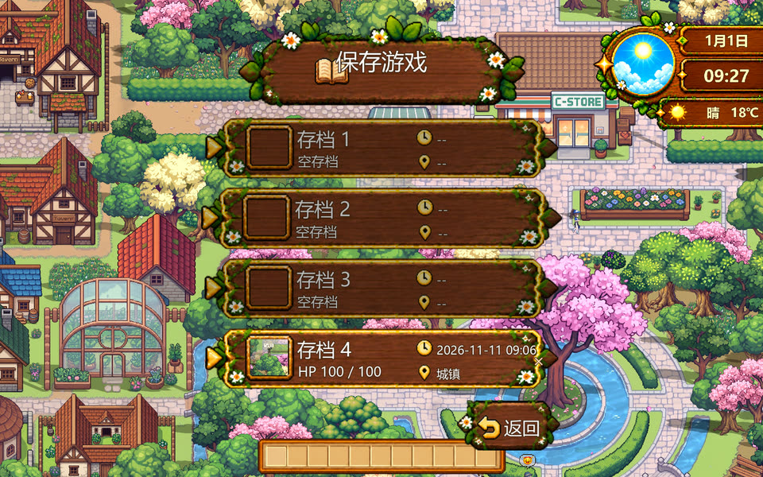
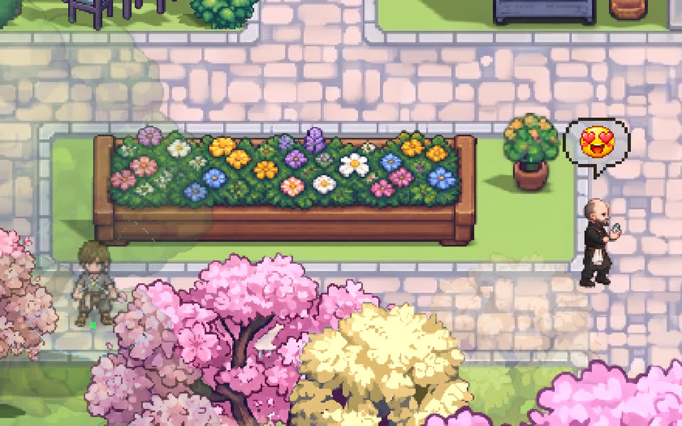
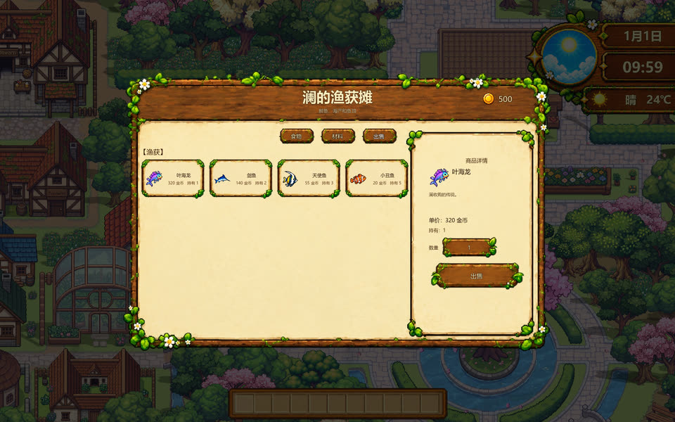
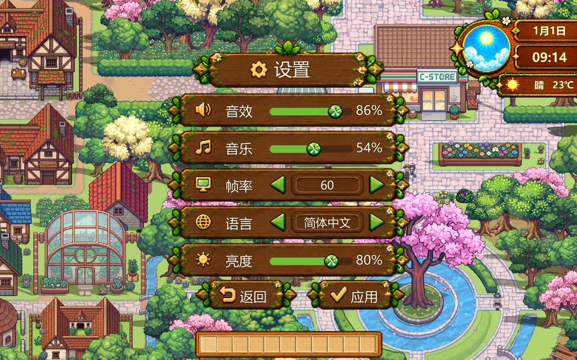

场景 / 光照
影子跟着时间走
城镇里 1000 多片影子会随游戏内时间转向、变长；清晨和黄昏的光感不是一张滤镜。
影子不是手画的：运行时从精灵的可见像素描出剪影，按太阳角度做投影，新加的树和房子不用单独做影子资源。柔边用几张偏移的半透明副本叠出来，每帧只更新变换。
影子、睡觉、存档、NPC 心情气泡、商店收购和设置，六个不占主线、但每天都会用到的系统。
城镇里 1000 多片影子会随游戏内时间转向、变长；清晨和黄昏的光感不是一张滤镜。
影子不是手画的：运行时从精灵的可见像素描出剪影，按太阳角度做投影，新加的树和房子不用单独做影子资源。柔边用几张偏移的半透明副本叠出来，每帧只更新变换。
在床边确认后黑屏、日历 +1 天，醒来固定早上 7:00；BGM 从原位置继续。
黑屏不是硬切：0.35 秒压黑、停 2 秒、日期淡入、闹钟响、BGM 从原位置长淡入；同时自动存到 1 号槽，避免忘记存档。

位置、血量、背包、金币、时间、NPC 对话与送礼记忆都写进同一个存档。每个槽位有一张以玩家为中心的缩略图，覆盖前先留一份备份；自动存档写回上次用过的槽位。

30 种手绘表情，按权重随机挑：开心类权重大，生气和大哭很少出现。气泡大小跟着角色在屏幕上的身高缩放，走近走远都不会像一张贴纸。

收购页只收渔获：普通、稀有、史诗、传说四档各有价格，列表按价格从高到低排，卖之前能直接看到这一条值多少。

音效与音乐分开调，画面有档位，亮度单独一条；改完点应用就生效，不用重开。